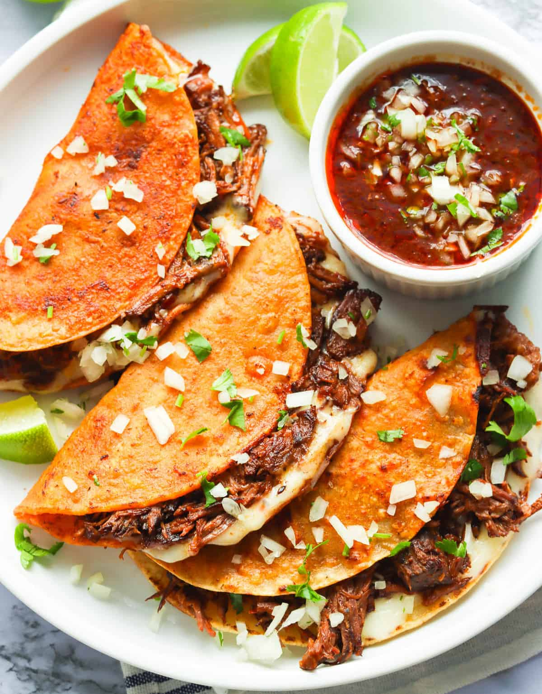

Quesibirrias

What are Quesibirrias?
Quesibirrias is a Mexican originated dish from Tijuana, Mexico. This delicious dish is
made from cooked beef that is folded into a
corn tortilla with melted cheese and top with chopped cilantro, diced onion, and
your favorite salsa of your choice (salsa roja or verde).
Ingredients
- 700g beef chuck
- 2 dried ancho chilies
- 2 dried guajillo chilies
- 1 dried chipotle chilies
- 1 tbsp of cloves ground
- 1 tbsp of black ground pepper
- 1 tsp of thyme
- 1 tsp of majoram
- 1 tsp of oregano
- 1/2 tsp of cumin
- 1/2 tsp of ground ginger
- salt
- 3 garlic cloves
- 1/2 an onion
- 2 bay leaves
- 1 cinnamon sick
- 1/4 cup of apple cider vinegar
- 2 fresh tomatoes
- boilder water
- 2 cups of beef stock
- vegetable oil
- corn tortillas
- diced onions
- oaxaca cheese
- cilantro
Instructions
Preparing the beef
- Preheat oven at 350°F.
- Start de-seeding the ancho, guajillo, and chipotle chilies.
- Soak the chilies in 2 cups of boiling water for 10-15 minutes.
- Chop the beef chuck into medium-sized pieces. Season them with salt and pepper.
- Grab a dutch oven, add oil and sear beef pieces on each side for 5-7 minutes.
until brown on each side.
- Pour 2 cups of water into the beef, salt to taste, bring to a boil and cook beef
on medium heat fo 30 mintues. (This creates the stock for the consome.)
Making the sauce
- Add the chilies and the water that soaked into a blender
- Add apple cider vinegar, tomatoes, onion, garlic cloves, cloves,
marjoram, thyme, oregano, cumin, ginger, salt to taste and black pepper
to the blender and blend until smooth.
- Pour the sauce into the dutch oven with beef.
- Add the bay leaves, cinnamon stick, salt to taste and the black pepper
to the water if it becomes too dry.
-
Once the beef is ready. Remove the beef from the oven and use a fork to shred it.
Making the Quesibirra Tacos
- Add a few drops of oil to a pan.
- Dip the corn tortilla in the consome.
- Add the tortilla to the pan, add the shredded beef to half of the tortilla,
pour a bit more consome over the tortilla, the flip the taco and cook on the other side
for a few mintues.
- Remove the taco from the pan and top the taco with diced onions,
oaxaca cheese, and cilantro.
- Serve and Enjoy!
Back to Recipes